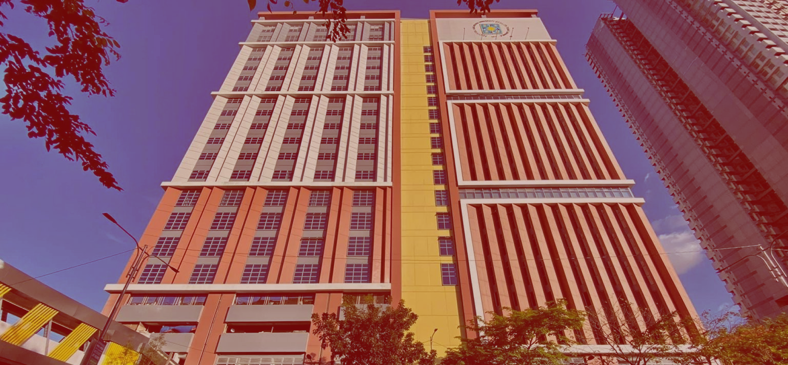
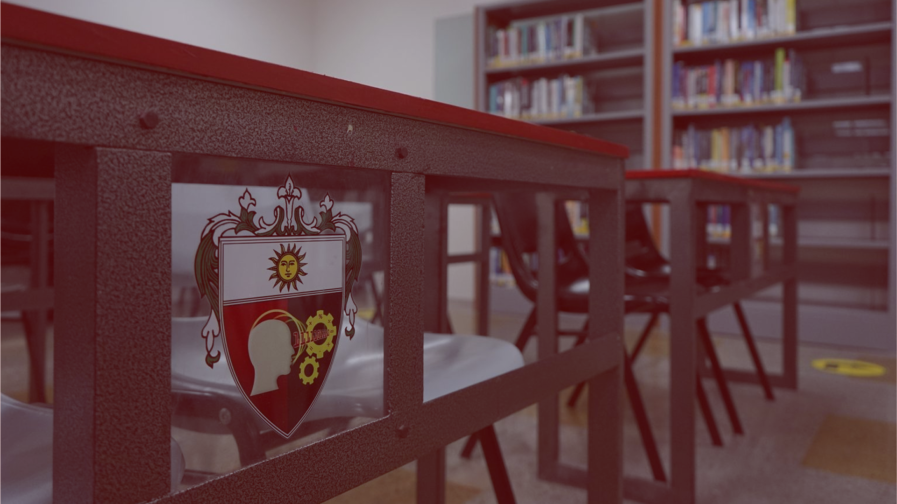

Computer Science
CICS - Department of CS
The BS Computer Science program at UST CICS is a four-year degree that gives students a strong foundation in software engineering, algorithmic thinking, data science, and system design.
View More
Welcome to the
The College of Information and Computing Sciences (CICS) leads technology and computing education at the University of Santo Tomas. Initially formed in 2014 following its separation from the Faculty of Engineering, CICS attained full college status in 2021. Today, based in the Blessed Pier Giorgio Frassati, O.P. Building, the college holds distinction as a certified Center of Development in IT.

Becoming an independent college in 2021 after branching off from the Faculty of Engineering, CICS focuses on training skilled tech professionals who lead with strong ethical values.
The College of Information and Computing Sciences aims to be a leading, innovative hub for Information Technology education and research within the Asia-Pacific region.
Inspired by St. Thomas Aquinas and St. Vincent Ferrer, the College of Information and Computing Sciences is dedicated to seeking the truth and developing highly skilled IT professionals. We form leaders who are committed to continuous learning, social responsibility, and serving others in their chosen fields.
CICS - Department of CS
The BS Computer Science program at UST CICS is a four-year degree that gives students a strong foundation in software engineering, algorithmic thinking, data science, and system design.
View MoreCICS - Department of IS
The BS Information Systems program of UST CICS is a four year course that trains the students on how to design and implement data based IT solutions which automate processes and aid business decisions.
View MoreCICS - Department of IT
The BS Information Technology program at UST CICS is a four-year degree that equips students with practical skills to deploy, manage, and troubleshoot hardware, network infrastructures, and software solutions.
View More
Monday to Saturday:
7:00 a.m. – 12:00 n.n., 1:00 p.m. – 8:00 p.m.
+63-2-3406-1611 local 8518